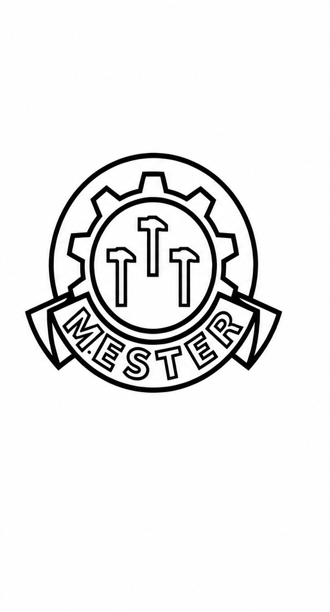
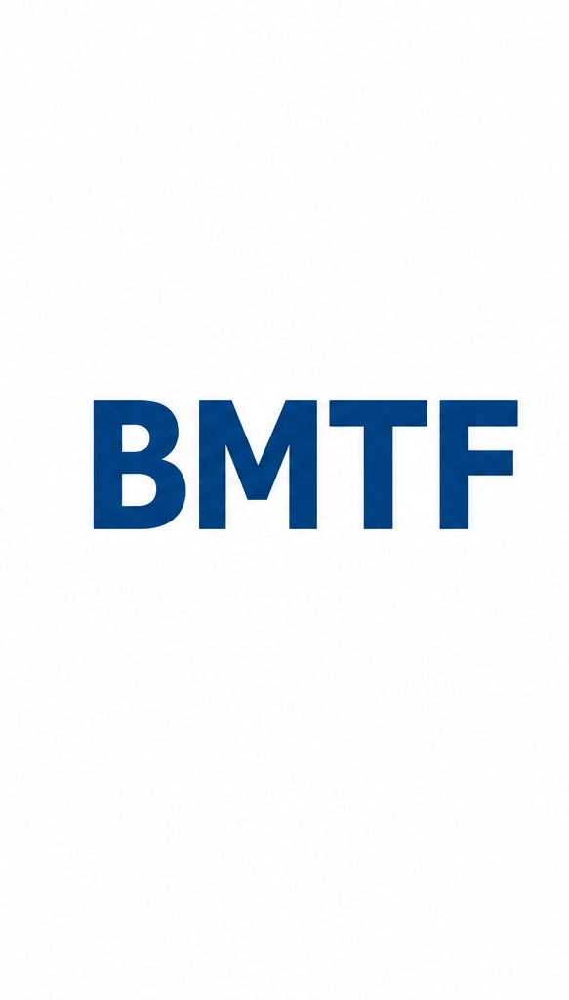
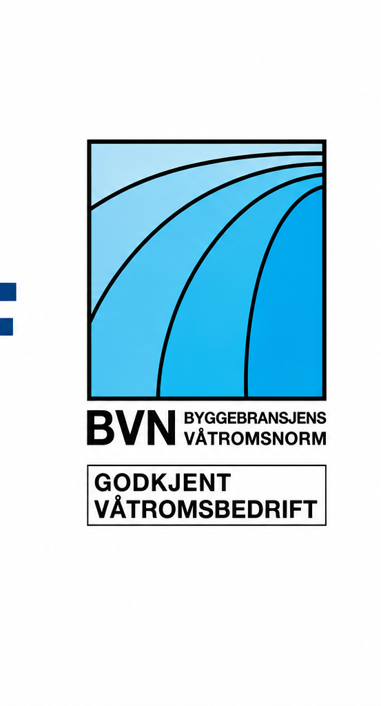

Bolig Design AS
Takstmenn i Telemark og Østlandsområdet
Tilstandsrapporter, skadetakst, verditakst og byggfaglig rådgivning i Skien, Porsgrunn, resten av Telemark og Østlandsområdet. Utført av godkjente takstmenn med over 40 års erfaring fra byggebransjen.
✓ Godkjent byggmester
✓ Godkjent våtromsbedrift
✓ Takstmann hos BMTF
✓ Lokal hjelp i Telemark


Utførte oppdrag
Utførte takseringsoppdrag
Her er et utvalg boliger og eiendommer vi har arbeidet med. Bildene viser bredden i takseringsoppdragene våre i Telemark og Østlandsområdet.
Bestill en befaring →


Bygg og rehabilitering
Egne prosjekter
Et utvalg av egne bygge- og rehabiliteringsprosjekter, fra kjøkken og våtrom til boliger, terrasser og uteområder.
Snakk med oss om ditt prosjekt →Taksering i Skien og Telemark
Tilstandsrapport, skadetakst og verditakst
Bolig Design AS hjelper boligeiere, boligkjøpere og selgere med grundige vurderinger av bolig og eiendom i Skien, Porsgrunn og Telemark.
⌂
Tilstandsrapport i Skien
Grundig teknisk gjennomgang av boligen ved kjøp og salg, med tydelig dokumentasjon av tilstand og avvik.
Be om tilbud →⚒
Skadetakst i Telemark
Faglig vurdering og dokumentasjon av skade, mulig årsak og nødvendig utbedring.
Be om tilbud →◇
Verditakst i Skien
Profesjonell vurdering av eiendommens verdi, standard, beliggenhet og areal.
Be om tilbud →⚡
Byggfaglig rådgivning
Råd om bolig, våtrom, byggtekniske forhold, vedlikehold og planlagte tiltak.
Ta kontakt →Vi kan også tilby
Praktisk hjelp før kjøp, salg og rehabilitering
Byggfaglig rådgivning som gir bedre oversikt og tryggere valg.
✓
Før salg
En forenklet tilstandsgjennomgang av boligen avdekker hva du kan velge å utbedre før salg og komplett tilstandsrapport. Vi kan også hjelpe med enkelte feil og mangler.
Be om tilbud →⌕
Rådgivning før boligkjøp
Vi kan bli med på visning, foreslå nødvendige tiltak, gi et raskt kostnadsoverslag og utarbeide nye plantegninger med ønskede endringer.
Ta kontakt →⚡
Enova-søknad
Ved energieffektivisering kan vi utarbeide en komplett søknad til Enova for støtte til blant annet vinduer, etterisolering, varmepumpe og varmtvannstank.
Spør oss om Enova →▤
Prosjektering og dokumentasjon
Vi prosjekterer, lager sjekklister og dokumenterer rehabilitering, inkludert bad og våtrom. Dokumentasjonen legges i Boligmappa.no og kan samles i en prosjektperm.
Snakk med oss →
40+
års erfaring fra byggebransjen
Lokal takstmann i Skien
Byggfaglig kompetanse du kan stole på
Bolig Design AS er et lokalt byggmester- og takseringsfirma med bred erfaring innen bygg, våtrom, skader og tilstandsrapporter. Vi legger vekt på grundige undersøkelser, tydelige forklaringer og personlig oppfølging før, under og etter befaringen.
Erfaring, trygghet og personlig oppfølging
Bolig Design AS drives av far og sønn, Magne og Marius Jonassen. Sammen kombinerer de lang praktisk erfaring fra byggebransjen med moderne kunnskap innen taksering, tilstandsrapporter og byggfaglig rådgivning. Firmaet har gjennomført over 4 000 oppdrag uten registrerte klager.
✓
Solid håndverksbakgrunn
Praktisk erfaring fra hele byggeprosessen gir tryggere vurderinger.
✓
Grundige rapporter
Rapportene er laget for å være tydelige, forståelige og faglig solide.
✓
Direkte kontakt
Du får personlig oppfølging av fagpersonen som utfører oppdraget.
Kompetanse og godkjenninger
Godkjent takstmann og byggmester
Dokumentert kompetanse innen bygg, taksering, skadevurdering og våtrom.

Mesterbedrift
Dokumentert byggfaglig kompetanse og lang praktisk erfaring.

Byggmesternes Takseringsforbund
Godkjent takstmann innen skade og tilstandsrapporter.

Godkjent våtromsbedrift
Godkjenning i A-, B- og C-modulen.
Slik fungerer det
Fra bestilling til ferdig takstrapport
Du får tydelig informasjon og personlig oppfølging under hele oppdraget.
01
Ta kontakt
Fortell hvilken tjeneste du trenger og litt om eiendommen.
02
Avtal befaring
Vi finner et tidspunkt som passer og avklarer nødvendig dokumentasjon.
03
Grundig undersøkelse
Boligen eller eiendommen gjennomgås systematisk og faglig.
04
Ferdig rapport
Du mottar rapporten digitalt og får svar på spørsmål.
Lokalkunnskap i Telemark
Taksering i Skien, Porsgrunn og nærliggende områder
Vi utfører tilstandsrapporter, skadetakster, verditakster og byggfaglig rådgivning for boliger og eiendommer i Skien, Porsgrunn og ellers i Telemark. Lokal kjennskap til boligtyper, byggeperioder og vanlige byggtekniske utfordringer gir et godt grunnlag for grundige vurderinger.
Takstmann Skien
Befaring og taksering av enebolig, rekkehus, leilighet, fritidsbolig og andre eiendommer i Skien.
Takstmann Porsgrunn
Tilstandsrapport, skadetakst og verditakst for kunder i Porsgrunn og nærliggende områder.
Taksering i Telemark
Vi vurderer oppdrag flere steder i Telemark. Send oss adressen, så gir vi beskjed om tilgjengelighet.
Personlig oppfølging
Du har direkte kontakt med takstmannen og får hjelp til å forstå rapporten og vurderingene.
Ofte stilte spørsmål
Spørsmål om taksering og tilstandsrapport
Hva koster en tilstandsrapport i Skien?
Prisen avhenger blant annet av boligens størrelse, alder og kompleksitet. Kontakt oss for et konkret tilbud.
Hvilke områder dekker dere?
Vi utfører hovedsakelig oppdrag i Skien, Porsgrunn og ellers i Telemark.
Hva er en tilstandsrapport?
En tilstandsrapport beskriver boligens tekniske tilstand og registrerte avvik på befaringstidspunktet.
Hva er forskjellen på takstene?
Tilstandsrapporten beskriver teknisk tilstand, mens verditaksten vurderer eiendommens verdi, standard og areal.
Bestill befaring
Trenger du takstmann i Skien eller Telemark?
Ta kontakt for en uforpliktende prat om boligen, eiendommen og oppdraget.
Kontakt lokal takstmann
Bestill befaring eller be om tilbud
Fyll ut skjemaet, så tar vi kontakt så snart som mulig.
Takk! Forespørselen er sendt.